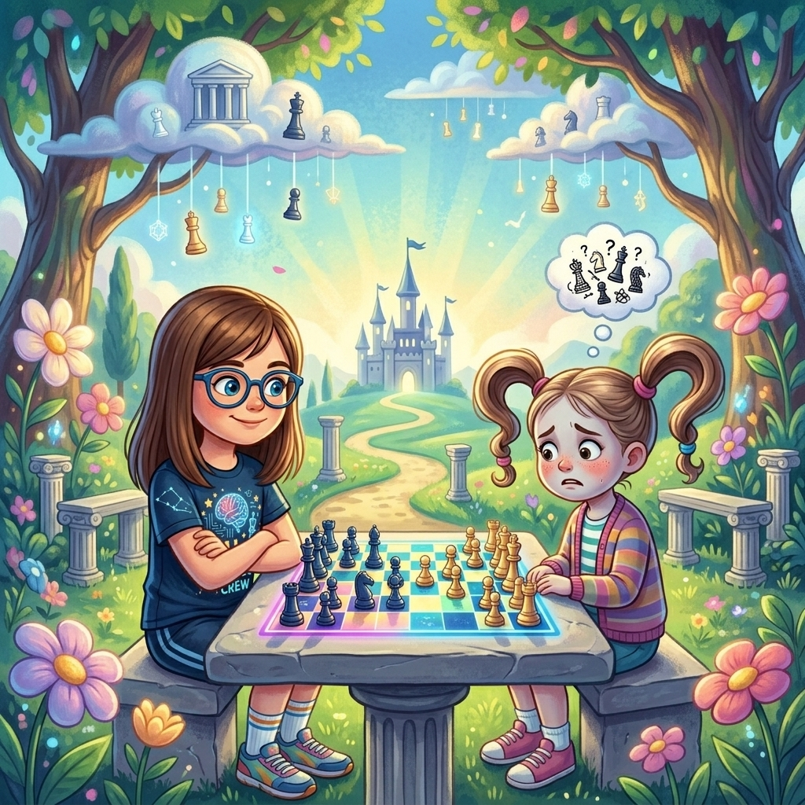
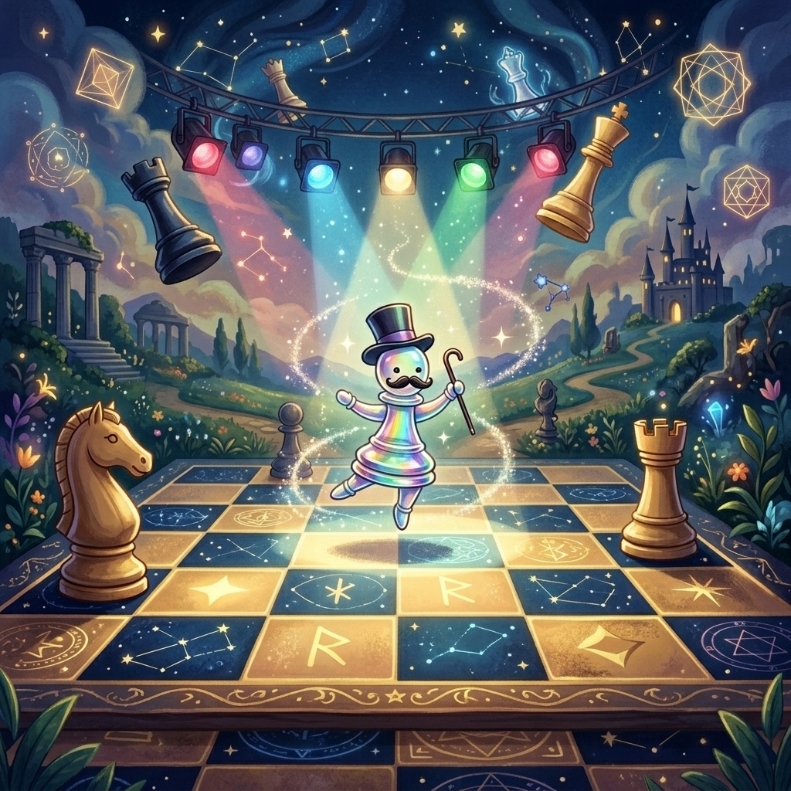

El Peón que Bailaba
Donde Martina descubre que enseñar también es una forma de jugar, y que un peón solo puede ser el que mejor baila en la pista
♟️ Ver la partida de peón aislado ↓▶️ ¿Prefieres escuchar la historia? Clic aquí para ver el Audiolibro Animado
El torneo de verano no era un torneo de verdad. Era un torneo de mentira. Lo organizaba la asociación del barrio con mesas de plástico en el patio del centro cívico, bajo una carpa que olía a protector solar y a jugo de naranja tibio. No había rating. No había árbitros con corbata. No había padres con cara de infarto en las gradas. Había niños descalzos, jugos con pajita, galletitas de agua y un perro que se había colado y dormía pacíficamente debajo de la mesa 8.
Martina llegó con sus shorts de vóley, su polera de ajedrez con IA y cero presión. Hoy no tocaba ganar. Hoy tocaba jugar. Que era distinto. Jugar era mover piezas sin que el estómago se te hiciera un nudo. Jugar era mirar el tablero y ver posibilidades en vez de amenazas. Jugar era... bueno, jugar.
—Este torneo es un desierto de tensión —dijo una voz desde la jarra de jugo de naranja, en la mesa del fondo—. ¿Nadie hace trampa hoy? ¿Nadie estornuda de mentira? ¿Nadie mueve peones escondidos? Esto es un aburrimiento de honestidad. Me aburro.
Martina se acercó a la jarra. El líquido naranja reflejaba algo que no era el cielo. Era una silueta. Oscura. Con brazos de humo. Apoyada contra el borde de la jarra como quien se apoya en la barra de un bar y pide algo más fuerte que jugo.
—La Sombra —dijo Martina—. ¿Qué haces en un torneo de verano?
—Turismo —dijo la Sombra—. Me dijeron que aquí había competencia y solo encuentro niños compartiendo galletitas. Es deprimente. ¿Sabes lo difícil que es susurrarle a alguien que haga trampa cuando está mojando la galletita en el jugo? Imposible. El jugo absorbe las malas intenciones. Es un hecho científico.
—No creo que eso sea científico.
—Mi ciencia, mis reglas. —La Sombra se removió en la jarra, haciendo que el jugo burbujeara—. ¿Vas a jugar o qué? Dame algo interesante que mirar. Aunque sea una partida honrada. Ya que no hay trampas, al menos que haya arte.
—Hoy no hay trampas —dijo Martina—. Hoy bailamos.
—¿Bailamos?
—Te explico luego.
—Qué asco. —La Sombra hizo una pausa—. ¿Puedo mirar igual?
—Puedes.
El emparejamiento la mandó a la mesa 5. Martina se sentó. Ajustó las piezas. Esperó. Su rival no llegaba. Miró alrededor y la vio: una niña de siete años, menuda, con el pelo recogido en dos colitas que parecían signos de interrogación. Estaba frente a la mesa, a dos metros, sin atreverse a dar el último paso.
—¿Inés? —preguntó Martina, leyendo la tarjeta de emparejamiento.
La niña asintió sin hablar. Avanzó un paso. Se detuvo. Avanzó otro. Como un peón. De uno en uno. Al llegar a la silla, se sentó con el cuidado de quien se sienta en un trono ajeno.
—Es mi primer torneo —dijo Inés, y su voz era un hilo—. Aprendí a mover las piezas el mes pasado. Bueno, casi todas. El caballo todavía me cuesta. A veces salta para un lado y yo quería que saltara para el otro.
—Es normal —dijo Martina—. Yo conozco un caballo que lleva siglos intentando saltar en L y a veces le sale Ŋ. Y es feliz igual.
Inés la miró sin entender. Martina le sonrió.
—Chiste interno. Empiezas tú. Blancas.
Inés miró el tablero como quien mira un océano. Extenso. Profundo. Lleno de cosas que no entiende pero que intuye. Su mano tembló sobre el peón de rey. ¿e4? ¿d4? ¿c4? ¿o mejor no mover nada y esperar a que el rival se equivocara?
Jugó e4. El peón avanzó dos casillas. Tembloroso pero decidido. Como un niño que se lanza al agua por primera vez.
Martina respondió e5. Simétrico. Tranquilo. Inés respiró aliviada. Al menos la primera jugada no había sido un desastre.

Martina jugó esa partida de una forma que nunca había jugado antes. No jugó para ganar —bueno, sí, siempre jugaba para ganar, eso era sagrado— pero jugó para enseñar. Cada jugada era un mensaje. Cada captura, una lección. Cada movimiento, una ventana que dejaba entreabierta para que Inés pudiera asomarse.
Inés, por su parte, jugaba como quien aprende un idioma nuevo. Tropezaba. Se corregía. Volvía a tropezar. Pero no se rendía. Y eso, para Martina, valía más que cien partidas perfectas.
En la jugada ocho, Inés cometió un error. Cambió su peón d y se quedó con un peón aislado en c4. Solitario. Sin amigos en las columnas de al lado. El peor escenario, según le habían dicho. «Los peones aislados son débiles. Son un blanco fácil. No los tengas nunca.»
—Ay —dijo Inés, mirando su peón solitario—. Lo perdí. El profe dijo que nunca hay que quedarse con un peón aislado. Que es como estar solo en el recreo.
Martina miró el peón. Blanco. En c4. Solo. Pero erguido. Como un bailarín en un escenario vacío.
—Tu profe te dijo una verdad a medias —dijo Martina—. Los peones aislados pueden ser débiles si no sabes usarlos. Pero también pueden ser tu mejor arma.
Inés la miró con sus ojos de colita interrogante.
—¿Un arma?
—Mira —Martina señaló el tablero—. Tu peón en c4 no tiene amigos en las columnas b y d. Eso significa que las columnas b y d están abiertas. Puedes poner tus torres ahí. Puedes atacar por ahí. Nadie te lo impide. Y además, tu peón controla las casillas b5 y d5. Son dos casillas en territorio enemigo que ahora son tuyas. ¿Ves? No está solo. Está solo de peones. Pero está rodeado de posibilidades.
Inés miró el peón en c4. Seguía siendo un peón. Blanco. Pequeño. Pero ya no le daba pena. Le daba... ¿curiosidad?
—Como un bailarín —dijo Inés.
—¿Cómo?
—Como un bailarín que baila solo. Los demás necesitan pareja para bailar. Él no. Él baila solo en el centro de la pista. Y los demás lo miran.
Martina parpadeó. Aquella niña de siete años, que temblaba al tocar el peón de rey, acababa de encontrar la metáfora perfecta.
—Exacto —dijo Martina—. Se llama iniciativa. El que baila solo decide los pasos. Los que bailan en pareja tienen que ponerse de acuerdo. Y ponerse de acuerdo lleva tiempo. Tiempo que tú usas para atacar.
Peoncito apareció en la casilla c4, justo al lado del peón aislado. Llevaba un sombrero de copa diminuto y un bastón.
—¿Por qué tienes un sombrero de copa? —preguntó Martina en voz baja.
—Porque este peón no está aislado: está en un escenario. Y en un escenario se necesita sombrero de copa. Y bastón. Y bigote, por supuesto. —Peoncito se ajustó el suyo—. Este peón es artista. ¿No lo ves?
—Lo veo. Pero Inés no puede verte a ti.
—Lo sé. Los artistas no necesitan que los vean. Necesitan que los sientan. Y esa niña lo está sintiendo.
Y era verdad. Inés miraba el peón de c4 con otros ojos. Ya no era una debilidad. Era una oportunidad. Un escenario. Un peón que bailaba.
Martina continuó la partida enseñando. Jugó Ae3, desarrollando. Inés jugó Cc6, atacando el centro. Bien. Muy bien. Martina jugó Cc3. Inés Cf6. Las dos desarrollaban. Las dos construían. Una aprendiendo, la otra enseñando. Las dos jugando.
En la jugada catorce, Martina le mostró la siguiente lección. Colocó una torre en la columna d abierta. Td1. La torre dominaba toda la columna. De arriba a abajo. Sin peones que la bloquearan. Libre. Como un faro que ilumina el mar.
—¿Ves esta columna? —dijo Martina—. Se llama columna abierta porque no tiene peones tuyos ni míos. La abriste tú, sin querer, cuando moviste tu peón d. Gracias a tu peón aislado, ahora tienes esta autopista. Y por esta autopista...
—...puedo llevar mis torres —completó Inés, y por primera vez su voz no fue un hilo. Fue una cuerda—. Y atacar al rey.
Martina asintió.
Inés movió su torre a d8. La puso frente a frente con la torre de Martina. Se miraron. Como dos trenes en la misma vía. Como dos bailarines en la misma pista.
—Ahora bailamos las dos —dijo Inés, y sonrió.

La partida terminó con victoria de Martina. Era inevitable. Pero Inés no se fue con la cabeza gacha. Se fue con los ojos brillantes y una libreta llena de anotaciones. «Peón aislado = bailarín solitario. Columna abierta = autopista. Iniciativa = bailar primero.»
—¿Vas a volver al próximo torneo? —preguntó Martina.
—Sí —dijo Inés—. Y voy a traer más peones. Y todos van a bailar.
—Los peones no bailan solos si no saben que pueden —dijo Martina—. Pero los tuyos ya saben.
Inés se fue corriendo hacia su mamá, con sus colitas rebotando como dos peones en su primer movimiento. Martina se quedó sentada, mirando el tablero vacío.
—Ha sido bonito —dijo Peoncito desde c4, quitándose el sombrero de copa—. Muy bonito. Casi me emociono. ¿Se nota que casi me emociono?
—No. El bigote te tapa la emoción.
—Es verdad. Es parte de su encanto.
De vuelta en la mesa de los jugos, la Sombra seguía en la jarra. El nivel de naranja había bajado, aunque nadie recordaba haberla visto beber. Quizás las sombras no beben. O quizás beben pero no dejan huella.
—¿Satisfecha? —preguntó Martina.
La Sombra bostezó —o lo que fuera ese ruido de bisagras oxidadas—.
—Media hora de honestidad y buenas intenciones. He visto funerales más divertidos. —Hizo una pausa—. Pero la metáfora de la niña, lo del bailarín... eso estuvo bien. Me gustó. No se lo digas a nadie. Tengo reputación que mantener.
—Tu reputación es ser la encarnación de las trampas en el ajedrez.
—Exacto. Y a las encarnaciones de las trampas no les gusta el arte. Les gusta el caos. El polen falso. Los estornudos fingidos. Pero a veces... —la Sombra se encogió, como quien se arrebuja en una manta invisible—... a veces una pausa no viene mal.
—¿Una pausa para qué?
—Para preparar algo grande.
Martina la miró fijamente.
—¿Algo grande?
La Sombra sonrió. Aunque no tenía boca, Martina supo que sonreía. Las sombras no necesitan boca para sonreír. Les basta con el silencio que dejan después de una frase.
—Digamos que estoy... reuniendo material. El tramposo del chicle. La niña que tiembla. El rey que aprendió a caminar. Tú, que me diste las gracias. Todo eso es material. Y yo... —el jugo burbujeó—... estoy escribiendo algo.
—¿Tú escribes?
—Todo el mundo escribe. Las sombras también. Pero lo nuestro no se lee. Se siente. Y cuando esté listo... lo vas a sentir.
Un escalofrío recorrió el patio. El perro de la mesa 8 despertó, ladró una vez y se volvió a dormir. Incluso los perros saben cuándo no hay peligro real sino solo peligro futuro.
—Hasta entonces —dijo la Sombra—, sigue bailando.
Y se desvaneció en el jugo de naranja, dejando un regusto amargo que nadie notó porque para entonces ya se habían acabado las galletitas y el torneo estaba terminando.
Esa noche, Martina apuntó en su libreta:
«Un peón aislado no es un defecto. Es un bailarín solitario. Las columnas abiertas son autopistas. La iniciativa es bailar primero. Y las sombras, a veces, escriben cosas que todavía no podemos leer.»
Cerró la libreta. La guardó. Y se durmió pensando en una niña de siete años con colitas de interrogación que había descubierto que el ajedrez no era miedo: era baile.
Y si la Sombra estaba preparando algo grande, ella también. Porque Martina no esperaba las tormentas. Las anticipaba. Como Polgar. Como Tal. Como un peón que baila solo en el centro del tablero y espera a que empiece la música.
Fin del duodécimo cuento.
Continuará…
🏛️ El Secreto detrás del Cuento
El Peón Aislado (un peón que no tiene peones amigos en las columnas adyacentes) a menudo se considera una debilidad porque no puede ser defendido por otros peones. Sin embargo, como le enseña Martina a Inés, ¡también es una gran ventaja! Proporciona espacio, casillas centrales fuertes y líneas abiertas para que las torres y alfiles ataquen al rey. Reproduce este clásico ejemplo (Botvinnik vs Vidmar, 1936) donde las blancas dominan el centro gracias a su peón aislado y terminan lanzando un ataque imparable.